初赛第一天
1.
第一篇侦探推理小说是爱伦坡的哪篇小说
A. 《毛格街血案》 （莫格街谋杀案）
答：A
2.
有一个奇怪的数字，去掉第一个数字，是13，去掉最后一个数字是40。
请问：这个奇怪的数字是什么？
【提示：读出来】
答：四十三
3.
有一个牢房，有3个犯人关在其中。因为玻璃很厚，所以3个人只能互相看见，不能听到 对方说话的声音。” 有一天，国王想了一个办法，给他们每个人头上都戴了一顶帽子，只叫他们知道帽 子的颜色不是白的就是黑的，不叫他们知道自己所戴帽子的是什么颜色的。在这种情况 下，国王宣布两条如下：1．谁能看到其他两个犯人戴的都是白帽子，就可以释放谁；2．谁知道自己戴的是黑帽子，就释放谁。其实，国王给他们戴的都是黑帽子。他们因为被绑，看不见自己罢了。于是他们3个人互相盯着不说话。可是不久，心眼灵的A用推理的方法，认定自己戴的是黑帽子。您想 ，他是怎样推断的?
答：如果A头上的帽子是白色，那么B看到的是将是一黑一白，而C并没有看到2个白色帽子，所以B可知自己是黑色，但B没有被释放，所以B看到也是2个黑帽子。即A是黑色
4.
一般失踪超过几年就被确认是死亡了（）
A.五年 B.六年
C.七年 D.八年
答：C
5.
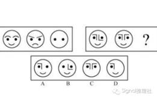
答：A 去异存同
6.
被海蛇咬到的时候，什么可以中和毒素（）
A.酒精 B.红药水
C.红茶 D.碘酒
答：C
7.
对于一个成年人来说，血液如果流失超过多少，人就会死亡？（）
A.20% B.30%
C. 40% D.50%
答：C
8.
风是从那边吹过来的？
A.南边
B.北边
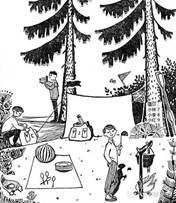
答：A 南边。因为树都是南面长的旺盛，而画面上树都是左边叶子多，右边叶子少，而无论是火焰还是小旗都是向着右边飘得，说明风是从左向右刮，就是从南向北刮
9.
重庆府人胡生利，在外做生意很久没有回来。四月的一天，他的妻子一个人在家，晚上被盗贼所杀。那天晚 上下着小雨，人们在泥里拾到了一把扇子，上面的题词是王名赠给李前的。王名不知道是谁，但李前，人们都认识，平时言行举止很不庄重，于是乡里的人都认定是他杀的人。 拘捕到公堂上，严刑拷打之下，他也承认了。案子已经定了，一天，县令的夫人笑着对他说：＂这个案子判错了。＂于是，说出了一番话……县令听后果然心服口服， 以此去找罪犯，果然得到了事情的真相。
夫人说了什么？
答：妻子被杀是四月，夜里下雨，天气一定还显微寒，不需要扇子， 哪里有在杀人的时候，还带着这个东西的呢？明显是为了嫁祸于人。
10.
谁是作案者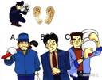
答：C从脚印看，左脚印磨损明显厉害些，所以，作案者应该是一名经常扛重物的左撇子，做配资往往将手表戴在右手手腕上。
11.
人周围气体中含超过多少含量的二氧化碳，吸入后会剧烈痉挛，几秒钟便会咬舌而死且身体冰凉？()
A.5% B.20%
C.30% D.40%
答：D
12.
食物中毒时，可以用以下哪种物品磨碎冲水灌服暂时缓解毒性？（）
A.红豆 B.绿豆
C.黑豆 D.黄豆
答：B
13.
酒仙范大，醉酒后常常称自己杀过人。这天，范大又多喝了酒。喝醉后对酒友说：＂昨天我把一个有钱的商人推到了深沟里，得了很多钱。＂酒友信以为真，就把范大告到了官府。这时正好有一妇人来告状，说有人把她丈夫杀死扔到了深沟里，丈夫外出做生意赚的钱也都被人抢了。 县令随妇人去验尸，尸体衣衫褴褛，没有头颅。于是县令说：＂你一人孤苦伶仃的怎么生活呢？一找到尸体的头颅，定案之后，你就可以再嫁了。＂第二天，与妇人同村的李三来报告说他找到了尸体的头颅。这时，县令忽然指着妇人和李三说：＂你们两个就是罪犯，还敢诬陷范大？＂两人不服，待县令把证据摆出来之后，二人不得不承认勾结一起，谋害该妇人亲夫的事实。请问：县令的证据是什么？
答：尸体在深沟里，怎么能确信是自己的丈夫呢？必定是先知道丈夫死在这儿了。而且衣服破烂，怎么能有那么多的钱呢？头颅在哪儿，李三为何如此熟悉？又这么着急地来报呢？必定是想与妇人早日成亲。
14.
福尔摩斯摔落悬崖而死的那篇小说叫什么名字
答：《最后一案》
15.
预审员在审问犯罪嫌疑人时，发现他是一个聋哑人，便对他进行书面盘问。书面盘问结束后，预审员沉思了一会儿，对这个聋哑人说了一句话，便发现聋哑人是作案者。预审员说了一句什么话使罪犯露出了马脚？
答：你可以回去了
16.
50名运动员按顺序排成一排，教练下令：“单数运动员出列！”剩下的运动员重新排列编号，教练又下令：“单数运动员出列！”如此下去，最后只剩下一个人，他是几号运动员？如果教练喊：“双数运动员出列。”最后剩下的又是谁？
答：教练下令“单数”运动员出列时，教练只要下5次命令，就能知道剩下的那个人。此人在下第五次令之前排序为2，在下4次令之前排序为4，在下3次令之前排序为8，在下2次令之前排序为16，在下1次令之前排序为32，即32位运动员。而后者，双数运动员出列时，我们可以得出剩下的是1号运动员。因此：前者32号，后者1号。
17.
被称为“世界侦探小说之父”的人物是谁？
A.江户川乱步 B.夏洛克
C.柯南·道尔 D.约瑟芬·铁伊
答：C
18.
口唇及面颊樱桃红色，中了什么毒？
A.亚甲蓝，酚，萨罗
B.安非他明，巴比妥类，柯卡因，甲醇
C.山道年，洋地黄
D.一氧化碳，氰化物等
答：D
19.
一个病人在医院的病床上被人用水果刀刺死。凶器在医院的花园里找到，刀柄上没有发现指纹，但刀柄上爬着许多蚂蚁。行凶时医院尚未开门，所以凶手很可能是住院病人。经过调查，有三个病人嫌疑最大：五号病房的肠结核病人；七号病房的糖尿病人；九号病房的肾炎病人。你知道凶手是哪一个吗？
答：糖尿病人。蚂蚁喜欢吃糖，所以凶器上应该有糖，而糖尿病人的汗液含有糖分。
20.
公安局接到密电，最近将有一伙毒贩在该市进行交易，并会先和一个本地负责人在火车站接头，密电还提供了一张毒贩照片。警方对火车站进行了布控。照片上的毒贩子一出现，便衣便围了上去，但该男子突然走向车站广播处，要求女广播员为其广播找人。警方为了抓获那个本地负责人，没有抓捕该毒贩，但那个负责人一直没有和毒贩接头。其实毒贩已经和那个负责人接上了头，那么负责人是谁呢？
答：女广播员
21.
某公寓内发现一具尸体，房间里写字台上的一盏没有启动器的简易日光灯还亮着。但奇怪的是，写字台上放着的一只手电筒也亮着。“昨天夜里这座公寓停电大约30分钟。所以，被害人一定在是停电期间用手电筒时被害的。”管理员这样说。“不，被害事件发生在来电之后。凶手特意将手电筒打开，伪装成停电时作案，然后逃走的。”刑警看了一眼现场就作出了判断。那么，证据何在？
答：简易日光灯没有启动器，如果是停电时作的案，来电后不会自己亮。
22.
在一个公园的空地中央，公安人员一大早发现了一个仰面朝天躺着的男人。人已经死了，他的左胸上插着一把没有护手的日本刀。以尸体为中心半径25米范围内，只留有被害人皮鞋的鞋印，找不到凶手的足迹。刀鞘也找不到，被害人不可能拿着一把明晃晃的没有刀鞘的日本刀来公园里自杀，凶手更不可能用25米长的木棒绑在刀栓上行刺。那么，这个男人究竟是怎么死的呢？
答：凶手将日本刀当作箭，在25米以外拉弓射杀公园内的男子。
23.
侦探波尔开车行驶在小路上，一个叫尤因的人挡住他，请波尔载他去霍恩家。车子行驶到霍恩家门口，尤因说：“请你等我两分钟，我和霍恩说几句话。”尤因从四级台阶旁跃上门廊，按响门铃，却没人来开门。他跑回来大叫：“波尔先生，霍恩倒在小树丛后面！”波尔下车后看到台阶上油漆没干，马上指出尤因与此案有关。波尔是如何看出破绽的？
答：尤因走进院子的时候不走台阶，却从台阶上跳过，这表明他到过现场，知道台阶是刚刚油漆过的。
24.
一名男子伏尸荒山的沙堆中，警方发现尸身有很多淤伤，相信是同人打斗致死的；而且尸身仍然温暖，相信是死去不久。警方捉住了三名嫌疑犯，他们都是临时演员，刚才在现场附近拍过戏。三个人打扮分别为悍妇、和尚、侠士，他们的身上都有淤伤，但皆称是拍戏时撞伤的。警方还发现这三名疑犯在半小时内洗过澡及换过衣服，所以身上没留下沙尘。警方找出其中一人的嫌疑最大，您知道是谁吗？
答：疑犯与死者在沙堆打斗后，必先要洗净头发上的泥尘，而悍妇及侠士都有头发，他们很难在半小时内完成洗澡、洗头、吹头、穿衣服等程序，所以三名疑犯中，就以饰演和尚的临时演员嫌疑最大。
25.
仔细的观察一下1、2、3、4、5、6、7这七个数，如果不改变顺序，也不能重复，想一想用几个加号把这些数连起来，可使它们的和等于100？
答：添加四个加号可以把这些数连起来，而且使他们的和等于100。即1＋2＋34＋56＋7＝100。
26.
一天晚上10时，在312国道上，一位骑自行车者被撞死，肇事者逃逸。另一位骑车人看清肇事车是辆小汽车，但没看清车牌号，他立即报警。交警向肇事车逃逸方向追赶，可追了近15公里，也未发现肇事车。这15公里内既无岔路，又无可掩藏之处，肇事车难道插翅飞了？
答：肇事车司机在行驶一小段后，将车子调头行驶，前来追赶的交警因思维惯性只注意同方向前面有无肇事车，忽视了反方向的汽车，造成了疏漏。
27.
甲、乙、丙三个人在一起做作业，有一道数学题比较难，当他们三个人都把自己的解法说出来以后，甲说：“我做错了。”乙说：“甲做对了。”丙说：“我做错了。”在一旁的丁看到他们的答案并听了她们的意见后说：“你们三个人中有一个人做对了，有一个人说对了。”请问，他们三人中到底谁做对了？
答：假设丙做对了，那么甲、乙都做错了，这样，甲说的是正确的，乙、丙都说错了，符合条件，因此，丙做对了。
28.
小丽买了一双漂亮的鞋子，她的同学都没有见过这双鞋了，于是大家就猜，小红说：“你买的鞋不会是红色的。”小彩说：“你买的鞋子不是黄的就是黑的。”小玲说：“你买的鞋子一定是黑色的。”这三个人的看法至少有一种是正确的，至少有一种是错误的。请问，小丽的鞋子到底是什么颜色的？。
答：假设小丽的鞋子是黑色的，那么三种看法都是正确的，不符合题意；假设是黄色的，前两种看法是正确的，第三种看法是错误的；假设是红色的，那么三句话都是错误的。因此，小丽的裙子是黄色的。
29.
某国间谍回到已经两年没人住的家中。他走进暗室，那里有他的间谍装备。暗室四处都是灰，看来的确没有人来过。他把桌上的灰抹掉，接通了电炉电源准备烧水喝。他突然使劲用鼻子嗅了嗅，说：“不好！这暗室曾有人来过，而且就在近日。”他是怎么断定暗室曾有人来过呢？
答：间谍接通电源以后，发现空气中并没有烧焦的尘土味，这个电炉显然有人用过了。
30.
一个在运动中骨折的患者康复出院了，家里庆祝的时候，患者的哥哥说今天的可乐味道有点怪，患者的父亲和母亲喝了后纷纷表示可乐味道不对，但患者喝后坚称味道正常。患者在当天晚上洗澡时身亡，为什么？
答：他在医院接受治疗时因为错用药物而丧失了部分嗅觉和味觉，所以没能尝出可乐中的异常味道，洗澡时也没有闻到热水器中煤气泄漏的气味。
初赛第二天
1. 标注有“九二年”和“九三年”的面值一分的硬币，那一枚的重量更重？
答：笔画越多越重，93比92多一撇，因此93更重。
2. 《名侦探柯南》中柯南的声优是？
A.青山刚昌 B.花泽香菜
C.高山南 D.高木涉
答：C
3.口唇及面颊樱桃红色，中了什么毒？
A.亚甲蓝，酚，萨罗
B.安非他明，巴比妥类，柯卡因，甲醇
C.山道年，洋地黄
D.一氧化碳，氰化物等
答：D
4. 一位母亲拿着3颗糖，1颗硬糖，2颗软糖。她让兄弟俩一人拿走一颗，自己也留着一颗，兄弟俩谁猜对了对方的糖，就可以获得这些糖。兄弟俩拿到糖以后，先是沉默了一会儿，接着弟弟说：“我知道了！
Q：弟弟和哥哥拿的分别是什么糖？
A、硬糖 软糖 B、软糖 软糖 C、软糖 硬糖
答：B如果有拿到硬糖的话就不用沉默了
5. 把下面的六个小图形分为两类，使每一类图形都有各自的共同特征或规律，分类正确的一项是：( )
A.①②④，③⑤⑥
B.①③④，②⑤⑥
C.①③⑤，②④⑥
D.①④⑤，②③⑥
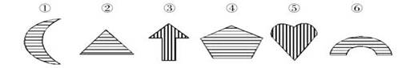
答：C 解析：每个图形都有1条对称轴，且都含有线条阴影，观察发现图形①③⑤中对称轴与阴影的方向相同，图形②④⑥中对称轴与阴影方向相互垂直，由此选择C
6. 《白夜行》中桐原亮司真正爱谁？
A.雪穗 B.川美子
C.雅秋 D.东川平雪
答：A
7. 几个探险者在一西方古
墓里发现一宝箱，墙壁
上则有一行文字，解开
便是密码。
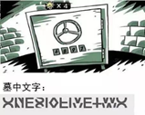
答：one six five two 将上半部分移到下半部分
8. 《嫌疑人X的献身》的作者是谁？
A.江户川柯南
B.东野圭吾
C.乙一
D.西泽保彦
答：B
9. 某中学的女教师小于上午没到学校上课，学校的教务主任在下午到小于的住所去探望。
当他到了小于的住所后发现，室内的灯是开着的，可是他按了几下门铃，却没人来开门。
教导主任很奇怪，于是请管理员来开门，门开了，发现小于身着睡衣躺在地上，浑身是血，已经死去多时了。于是教导主任立即报警。
警方来了以后，就展开了调查。发现死者是胸口被刺身亡。
根据伤口推断，死者可能是昨晚９点左右遇害的。警方又调查了左邻右舍以及管理员，知道在昨晚９点左右，有两个男子来拜访过小于，一个是小于的男友，一个是一个学生的哥哥－－当地的流氓。这两个夜访者说，先后按了门铃，都不见回音，就离开了。
教导主任详细的观察了周围，然后目光停在了门上的猫眼，于是他指出了凶手。你知道是谁吗？
答：凶手是小于的男友。
门上的猫眼表明，主人可以通过猫眼来分辨来访者。
如果是学生的哥哥，那么小于会换上整齐的衣服来见客；但是，如果来访者是男友，小于则不在意穿着睡衣开门。
10. 死后10小时以内，尸温每小时下降_____.
A. 1℃
B. 2℃
C. 3℃
D. 4℃
答：A
11. 清晨，海尔丁探长正在看骑手们跑马练习，突然马棚里冲出一个金发女郎，大叫着：“快来人哪！杀人啦！”
海尔丁急忙奔了过去。只见马棚里一个训马师打扮的人俯卧在干草堆上，后腰上有一大片血迹，一根锐利的冰锥就扎在他腰上。“死了大约有8个小时了。”海尔丁自语道：“也就是说谋杀发生在半夜。”他转过身，看了一眼正捂着脸的那位金发女郎，说：“噢，对不起，你袖子上沾的是血迹吗？”
那位金发女郎把她那骑装的袖口转过来，只见上面是一长道血印。“咦，”她脸色煞白，“一定是刚才在他身上噌到的。我叫盖尔。德伏尔，他，他是彼特。墨菲。他为我训马。”
海尔丁问道：“你知道有谁可能杀他吗？” “不,”她答道，“除了......也许是鲍勃。福特，彼特欠了他一大笔钱......”第二天，警官告诉海尔丁说：“彼特欠福特确切的数字是15000美元。可是经营鱼行的福特发誓说，他已有两天没见过彼特了。另外，盖尔小姐袖口上的血迹经化验是死者的。
“我想你一定下手了吧？”海尔丁问。
“罪犯已经在押。”警官答道。
谁是罪犯呢？
答：罪犯是金发女郎。
她自称血迹是“刚才在他身上蹭到的”，实际上那时彼特已死了8个小时。他的血已结成冰，不可能会蹭到她袖子上去
12. 托特母兹学校里有四个调皮鬼，他们的爸爸是好朋友，一日他们四个又惹了祸，在历史课上课前，他们故意叫全班同学跟着一起大声朗读英文文章，历史老师一进教室门，他们就跟老师说走错了，结果害得老师来回跑了好几趟，愤怒的老师把他们四个的家长一起叫到了办公室。
老师问：“你们谁是谁的家长？”
四个爸爸相视一笑，四个孩子看到后心领神会，说出了下图的几句话
“要疯啊你们这是！真是有其不靠谱的爸爸父必有其更不靠谱的娃娃！”老师被气的火冒三丈，心脏病都快犯了。
那么请根据图中的提示，帮助老师找到孩子们的爸爸吧o
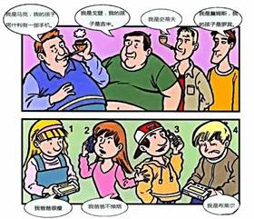
答：图中的爸爸自左至右分别为：马克、戈登、史蒂夫、詹姆士
小孩1，罗宾，是詹姆士的女儿；
小孩2，吉米，是戈登的女儿；
小孩3，阿什利，是马克的儿子；
小孩4，布莱尔，是史蒂夫的儿子。
13. 北宋天圣年间，四川仁寿县的江知县上任不久，就受理一桩田地诉讼案。
原告张某是个专管征收赋税的小吏，告他的邻居汪某无端赖占他家良田20亩。
汪某申辩：＂并无此事，这20亩地是我祖父留下来的。去年张某来我家收税，说如把田产划归他名下，可以不交赋税，不服徭役。我正为交不出赋税犯愁，就答应了。 当时我们商定在字据上写着将我的田产过拨给他， 但实际上田产还是属于我的。＂
张某说：＂10年前，汪家遇有急事，主动提出把20亩地卖给我，有字据为证。＂
知县接过字据，仔细审阅。这张叠起来的字据是用白宣纸写的，纸已发黄，纸的边缘也磨损了不少，像是年代很久了。 知县将字据叠起又展开，展开又叠起。
突然，眼睛一亮，把惊堂木一拍，喝道：＂大胆刁民，竟敢伪造字据，诓骗本县，还不从实招来！＂
知县从字据上发现了什么破绽？
答：如果是10年前的字据，并且是叠起来保存的话，就应当是外面发黄，里面还是白的。
而这张字据里外都呈黄色。经审问，张某终于招供：去年他和汪某立字据，有意将时间漏写，拿回家去补填了10年前日期，并用茶汁将字据染色，使纸变黄。
14. ______罪犯步子短，脚印之间的距离往往不规则，步行的路线弯曲。
A.少年 B.青年 C中年 D.老年
答：A
15. 一位年轻的女教师被人杀害在她的单身公寓里，凶手是在昨天晚上将她杀害。
女教师身穿睡衣倒在床上，致命的是胸口那一刀。公寓是个密室，女教师一定是自己开门请凶手进来再遇害的。警方发现公寓的防盗门上有个猫眼，可以看到敲门人是谁。经调查，警方锁定了两个犯罪嫌疑人：她的学生，她的情人。
学生说：老师约我晚上8点来她这里辅导功课，却没想到我一进来就见她穿着睡衣，根本不像是要给我辅导功课。然后她要求我跟她交欢，我没有同意，并很气愤地摔门而出。所以我待了不到半小时就离开了，怎么可能杀害她呢？
情人说：我是来给她送手机的，昨天我们车震她把手机忘在我车上了。进门后我看她穿着睡衣已经要休息了，她平时也一般都是9点多钟就休息的，我便放下手机就离开了。你们看桌上的手机就是我送来的，我怎么可能杀害她呢？
听完两个嫌疑人的供述，警方果断逮捕了情人。
警方是如何判定的呢？
答：因为学生是8点去的，走的时候不到半小时。而情人是9点去的，如果是学生杀的那么流氓女教师那时已经死了，所以情人在说谎。
16. “一个人的身高，十之八九可以从他的步伐的长度上知道。” 血字的研究－－《福尔摩斯侦探录》
身高(厘米)＝脚印长度(厘米)×______
A.4.876 B.5.876 C.6.876 D.7.876
答：C
17. 爆炸犯是谁？确定乘在自动扶梯上的罪犯。
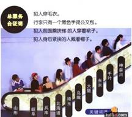
1. 答：鸟陬
18. 前不久是小虎的生日。他的父母在他四岁时就离婚了,他被判给了他爸爸,但是他的妈妈每当他生日的时候都会给他寄来贺卡和礼物。但是今年的生日,小虎却再也收不到礼物了,因为就在几天前,他母亲在一次外出时被一辆大卡车撞死了。小明拿出他珍藏的六张之前每次生日妈妈寄给他的贺卡,忍不住留下了眼泪。几天后,一阳警探逮捕小虎,理由是他杀死了那个撞死他母亲的肇事司机。
听到这里,机智的刑警们察觉到似乎有点不对劲,小虎四岁时父母离婚了,之后每当生日母亲都会给他寄来贺卡,在母亲被撞死之前,小虎一共只收到了6张贺卡,说明他此时的年龄应该是4+6=10岁。那么一个十岁的孩子怎么可能杀死一个成年的卡车司机呢？
答：其实答案很简单,小虎的生日是2月29日,是每隔四年才会出现一次的日子。在他四岁父母离婚后,他一共过了六次生日,就说明已经赶过去了4×6=24年,那么他的实际年龄就是24+4=28岁。所以一个二十八岁的青年杀死一个成年卡车司机也就没什么奇怪的了。
19. 头发中的含镉量偏高，意味着这个人______.
A.营养不良 B.烟瘾很大
C.患有多尿症 D.精神分裂
答：B
20. 张三和李四是同事。一天，两人扭打着到了公安局。张三对警官说：“昨天晚上，家里的灯都熄了，我突然听到扭打声。于是，跳下床出去看个究竟，正撞上一个人从我女儿的房间里跑出来，窜下楼梯去了。我跟早后面猛追，当那人跑到街口时，我借着路灯看清他是李四。他跑了大约50米远，仍掉了一个什么东西。那东西在路面弹了几下后掉进了阴沟，在黑暗中撞击出一串火花。我没追上他，回到家一看，女儿被钝器击中，倒在地上。”
警方按照张三说的地点，找到了一尊青铜像，青铜像底部沾的血迹和头发是张三的女儿的，而且青铜像上有李四的指纹。李四辩解说：“指纹可能是我前几天在张三家玩是留下的。”我听了他们两人的述说和现场所见，沉思片刻，对着张三说：“你在诬陷李四。”
为什么？
2. 答：青铜是一种抗摩擦的金属材料，古时候，被广泛用于制造大炮，青铜和路面撞击不会擦出火花。
21. 《福尔摩斯探案》的作者，柯南·道尔是哪个国家的？
A.美国 B.英国 C.日本 D.法国
答：B
22. 《纯黑的噩梦》是名侦探柯南第几部剧场版？
A.18 B.19 C.21 D.20
答：D
23. 《东方快车谋杀案》是哪个作家的作品？
A.阿加莎·克里斯蒂 B.东野圭吾
C.亚瑟·罗宾 D.柯南·道尔
答：A
24. 尸斑一般在人死后多少时间内出现？
A.1~2小时 B.2~3小时
C.3~4小时 D.4~5小时
答：A
25. 赵女士买了一些水果和小食品准备去看望一个朋友，谁知，这些水果和小食品被他的儿子们偷吃了，但她不知道是哪个儿子偷吃的。为此，赵女士非常生气，就盘问4个儿子谁偷吃了水果和小食品。老大说道：“是老二吃的。”老二说道：“是老四偷吃的。”老三说道：“反正我没有偷吃。”老四说道：“老二在说谎。”这4个儿子中只有一个人说了实话，其他的3个都在撒谎。
那么，到底是谁偷吃了这些水果和小食品？
A.老大 B.老二
C.老三 D.老四
3.
答：是老三偷吃了水果和小食品，只有老四说了实话。
用假设法分别假设老大、老二、老三、老四都说了实话，看是否与题意矛盾，就可以得出答案。
26. 两个女孩一起用餐，
她们都喝了冰红茶。
其中一个女孩喝得很快，
另一个女孩刚喝了一杯，
她就已经喝完五杯。
喝了一杯冰红茶的女孩死了
喝了五杯冰红茶的女孩活了下来。
后来警察发现，所有的饮料都有毒。
喝得多的女孩为什么没死？
答：毒在冰块里
27.含氰甙及氰酸临床表现为_____.
A.流汗 B.异味 C.杏仁味 D.口干
答：C
28. 有个寺庙有一颗大佛珠，由寺里两个和尚看守。中秋节那天，师傅对两个徒弟说：“我要外出化缘，你们留下来看守寺庙。”半个月后，师傅回来发现大佛珠被偷了，便叫来两个徒弟询问。
大徒弟说：“昨晚借着月光，我看见师弟爬上塔顶偷走佛珠。”
小徒弟争辩道：“我昨晚整夜都睡在禅房的，整夜都没起来过。”
师傅听完这段对话后，明白谁在说谎了。你知道吗?说明理由
A、大徒弟 B、小徒弟
答：A 大徒弟说谎，中秋节的半个月之后，月亮应该是月牙，基本没有月光。
29. 从所给的四个选项中，选择最合适的一个填入问号处，使之呈现一定规律性：
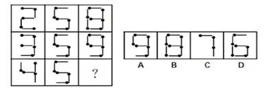
答：C 每行前两个图形叠加，保留所有的线条(火柴)，得到第三个图形。
30. 老爷下午两点被人杀死在房间，K警官发现少爷小陈、园丁老何、管家老赵三人有重大嫌疑。
小陈眉宇中有些欣喜：“我不知道谁杀了爸爸，我非常的难过，我今天吃完午饭后都在房间里看武侠小说，那本小说是最新出版的，我昨天晚上就跑去书店买了。”
老何害怕的说：“我没有杀害老爷，我当时正在浇园里的花，我怀疑是老赵杀了老爷，这个老赵私吞家里的钱，老爷当众羞辱过他，并且责令其一个月内还上钱，否则就报警，你们可千万别说是我说的。”
老赵紧张的说：“我没有杀害老爷，老爷对我恩重如山，我怀疑是老何或者是少爷杀了老爷，他们两个都是混蛋，老何在这里就工作了三年，近期却嚷着要涨工资，还要老爷多给他假期。少爷也非常的不像话，一点也不孝顺老爷，还成天无所事事，就盼着老爷死。”
请问：凶手是谁？并说明理由。
A.小陈 B.老何 C.老赵
答：B 因为工作了三年的园丁是不会在下午两点浇花的。
决赛
1. “喂?”一位十分有名的侦探先生接到一位粉丝的来电。
”您好!您就是毛利名侦探吗?我已经仰慕您很久了!下下个星期五有空吗?我想请您来我家吃顿饭!" 但侦探并不想去:“对不起啊!我下下个星期五恰好很忙!因为我上午要开一早上的会议，中午要参加我叔叔的葬礼，下午要去参加同学聚会，晚上又要开派对!真对不起，改天吧!" 粉丝沉默了，良久，又说:“侦探先生，您所说的事情中，恐怕，有件事说错了吧?" 请问，是哪件事说错了?
A、开会
B.葬礼
C.同学聚会
D、派对
答：,B因为不可能预言到自己下下周会参加葬礼
2. 一个天高气爽的秋天，警方收到一起报案。报案的是一个男子，他声称自己的女友自杀了。他说他们
两个在此之前通过电话，他的电话是录音电话。于是警方到他家去调查。进门后，时钟敲了四声-
下午四点了。警方调取了通话，发现通话长达1个半小时，警方耐心地听完了，发现只有他们两个的声
音。问:人是谁杀死的?
A、自杀
B、男子
C、另有其人
答：B没有时钟的声音，记录是伪造的
3.一天,harlan的店里来了一位顾客,挑了25元的货,顾客拿出100元,harlan没零钱找不开,就到隔壁飞白的店里把这100元换成零钱,回来给顾客找了75元零钱。过一会,飞白来找harlan,说刚才的是假钱,harlan马上给飞白换了
张真钱,问harlan赔了多少？
答：赔了100元
4. 昨天，有一个犯人从监狱里逃了出来。
早晨，他溜进一家茶叶店里准备大干一番。刚进去不久，茶叶店老板就回来了，于是他躲了起来。不久一男子进来，身后有一女子被他拉着。老板上前，被男子一枪打死并拖到暗处。
见此情景，逃犯不停颤抖。过了一会儿，街道上已有了行人，逃犯越来越恐惧，最终被杀人犯发现。
门又开了，一位顾客手里拿着报纸进来，杀人犯叫逃犯把客人打发走。
逃犯笑着接待顾客，并卖了茶叶给客人，又和客人寒暄了几句。
两分钟后，警察进来把逃犯与杀人犯抓走，那个被杀人犯带来的女子乃一富翁之女，今早才被绑架。
既没让杀人犯发觉有问题，又把警察叫了过来，逃犯是如何做到的？
答：逃犯对顾客说让他去看今天的报纸，逃犯昨天逃走，今天的报纸上会有报道，顾客看完后报了警。
5. 严冬的一天，女盗梅姑应团侦探之邀来到侦探事务所。 一进屋，见屋子中间摆着3个新型保险柜。"啊，梅姑，都说你是开保险柜的能人，那么你在10分钟之内能打开吗？"团侦探问道。
"3个用10分钟吗? ""不，一个用10分钟。""要是这样的话，没什么问题。"梅妨很自信地说。
“实际上，这是一个保险柜生产厂家的新产品，并计划推出这样的广告宣传词‘连女盗梅姑也望尘莫及’。为慎重起见，保险柜生产厂家特地委托我请你给试验一下。
"还没我打不开的保险柜呢，可如果10分钟内打开了怎么办?"
"可以得到厂家一笔可观的酬金。还是快干吧，我用这个沙漏给你计时。"
团侦探把一个10分钟用的沙漏倒放在保险柜上面。梅姑也跟着开始动作。她将听诊器贴在保险柜的密码盘上，慢慢拨动着号码。
"梅姑小姐，己经9分钟了，还没打开吗？" "别急嘛，新型保险柜，指尖对它还不熟悉。"
梅姑瞥了一眼沙滑，终于找出了密码。因为是6位数的复杂组合，所以颇费些功夫。
"好啦，开了。"梅姑打开保险柜时，沙漏里的沙子还差一点几就全到下面去了。
"可真不赖，正好在10分钟之内。那么再开第2个吧。"团侦探说着把沙漏倒过来。
第2个保险柜，梅姑也在规定时间打开了。
"趁着兴头，接着开第3个吧。但3个保险柜都要在规定时间内打开，否则就拿不到酬金"
"那好，请你把炉火再调旺些，这么冷手都木了，手感太迂钝。"梅姑说。
团侦探赶紧将煤油炉的火苗往大调了调，并将炉子挪至保险柜前。梅姑将手放在炉火上，烤了烤指尖。
"开始吧。" 团侦探将沙漏一倒过来，梅姑就接着开第3个保险柜。
然而，这次沙漏中的沙子都流到了下面，10分钟已过，但保险柜还未打开。"梅姑小姐，10分钟已经过了呀。"
"怪了，怎么会打不开呢，可……" 梅姑瞥了一眼煤油炉旁的沙漏。
"团侦探，这个保险柜没做什么手脚吧?"梅姑有些焦急，额头沁出了汗珠，可依然聚精会神地开锁。约摸过了一分钟，她终于把保险柜打开了。柜中放着一个装有酬金的信封。
"这就怪了，与前两次都是一样的干法，这次怎么会慢了呢?" 她歪看头，感到纳闷儿。忽然，她注意到了什么，"我差一点儿被你蒙骗了，我就是在规定时间内打开的保险柜，酬金该归我了!"
"哈哈哈、还是被你看出来了，真不愧是怪盗哇，还真骗不了你。" 团侦探乖乖地将酬金交给了梅姑。
那么，他是甩什么手段做的手脚呢?
答：沙漏放到了媒气炉旁。
为此，煤气炉发热使得沙滑的玻璃膨胀，漏沙子的窟窿也随之变大，沙子很快落下，所以，即便上部玻璃瓶的沙子全部落到下面，其实也没到10分钟。
6. 有一个城市社会治安很不好，人们成天提心吊胆的生活，汤姆就住在这个城市里。有一天晚上，汤姆做了一个噩梦，梦见他被凶恶的强盗用刀狠狠的捅了一刀。结果，可怜的汤姆因在梦中受到过度刺激而死掉了。这个故事是真的还是假的？
A、真的
B、假的
答：B假的，如果是真的就没有人知道这个梦了
7. 两个空心球,大小及重量相同,但材料不同。一个是金,一个是铅。空心球表面图 有相同颜色的油漆。现在要求在不破坏表面油漆的条件下用简易方法指出哪个是金的,哪 个是铅的。
答：相同得力原地旋转两个球, 两球重心到内壁中心距离不同, 线速度不同.转得快得是金球.
8. 一家服饰店的老板发现他的一种帽子卖不出去，只好降价销售。他先将帽子由20 元降到了8元，又由8 元降到了3.2元，再由3.2元降到1.28元，但还是没有完全卖光。如果说他的降价是有一定规律的，那么请问他下次降价应该是降到多少钱?
答：0.512元。因为他每次都以4折的幅度在降价。
9. 我是上海磁悬浮列车车长。这天刚到终点站，车厢后部就有骚动的声音逐渐变大，最后一股脑涌进驾驶室。
“怎么回事?” 我走出了驾驶室，却看到一个一身土豪打扮的男士和一个一身土气的小伙子扭打在一起。
“他趁 俺给 手表擦灰尘的时候抢了俺的表!”小伙子喘着粗气嚷道。
“别胡说了!”土豪瞪着小伙子，又掏出丝巾擦拭着被小伙子弄脏的表盒子“明明是我的表，你抢走就变你的了?"
"你们说说表有啥特征?" 我一把撸下了帽子问道。
小伙子抢先开了腔，“表是俺爹留给俺的，机械表，金属表带!"
土豪鄙夷地望了他一眼，“我是看着表一步步走到12点才拔出表旋钮停住了表的。表的牌子是埃尔金，1910年美国产，表旋钮上应该还能找得到我的指纹吧。我问:“你的手表有没有出过什么故障?” 土豪:“它走的一直都很好，一直没问题。”
我仔细观察了下这只表，我知道这表是谁的了.....
A.土豪
B、小伙子
C、我
答：B机械手表的内部零件中有一个“游丝”，游丝的摆动会受到磁场的影响。在磁悬浮列车
中的磁场足以影响手表的正常走动，特别是早期的手表，甚至会出现指针左右摆动却不走的情况。所以土豪所说的“看着它一步步走到整点”当然是谎话啦
10. 在20世纪中有这样一年，这一年的年份数倒过来写在纸上仍是该年年份数。这一年是哪一年?
答：1961
11. 公安局截获某犯罪团伙的一封密电，电文如下:吾合分昌盍旮垄聚鑫。请破译这封密电。(答案是密电内容，9个汉字)。
答：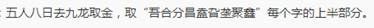
12. 小张在一个小超市买了一些东西，他离开的时候发现超市的时钟指向11点50分，回到家，家里的时钟已经是12点5分了，但他发现还有一些重要的东西没有买，于是就以同一速度返回超市。到超市时他发现超市的时钟指向12点10分。
家里的钟是十分准确的，请问超市的钟是慢了还是快了？
答：小超市的时钟慢了五分钟
13. 一个冬日的黄昏，我正漫步街头，突然听到一声枪响，看见不远处一个老人跌向房门，慢慢地倒了下去。我和街上仅有的两个人，先后跑了过去，发现老人背部中弹，已经死去。
我看见两个人都戴着手套，便问他们刚才在做什么。
第一位说：“我看见老人刚要锁门，枪一响，他应声而倒，我便立即跑来。”
第二位说：“我听到枪声不知发生了什么事情，看到你俩到往这跑，我也就跟了过来。”
钥匙还插在房门的锁眼里，我打开门，走进房间，打电话报警。警署人员来了以后，我指着一个人说：“把他拘留询问。”
拘留谁？为什么？
答：拘留第一个说话的人。
他知道老人是锁房门，而不是开房门，说明他一直在窥视老人行动。
14. 某市一个大型珠宝展览会上，人山人海。突然，一个男子迅速走到装有一粒价值连成的钻石的玻璃柜前，抡起锤子一敲，玻璃“哗啦”一声破裂开来，男子抢出钻石，乘乱逃走。警方赶到现场，珠宝商哭诉道：“柜子是用防盗公司制造的特别防盗玻璃做的，别说锤子，就是子弹打上去也不会破裂呀！”经过调查，认定那些碎玻璃的确是防盗玻璃。警方百思不得其解，于是向名侦探请教。皮特略一思索，便根据防盗玻璃的特性，指出了谁是罪犯。你知道谁是罪犯吗？为什么？
答：脆弱的防盗玻璃。
犯人是制造玻璃的人。这种钢化玻璃，尽管很硬，但是只要上面有一个小小的裂缝，再照着那里用点劲儿，就会像瓷碗一样碎掉。知道这种常识的人应该不多，而且这明显是有预谋的，普通人不知道，知道也不会去砸这种玻璃，而知道这种常识，又能制造这种漏洞的就只有玻璃的制造人了。
15. 琳达的马脚
柯南正在寓所用餐，只见琳达小姐尖叫着“救命”闯了进来，上气不接下气地叫到：“太可怕了……小偷盗走了我的毕加索名画……吓死我了……”她头发湿漉漉的，毛巾浴衣下双脚还淌着水珠。柯南来到她的浴室看着，听她详细叙述着。
琳达说，刚才她在浴室里淋热水浴，门和窗都是紧紧关着的，当她洗完穿上浴衣，门突然被猛力撞开，她从镜子里看到一张肥大、通红、粗糙的脸，咧开大嘴对她阴笑。她以为强盗要杀自己，可那家伙却反身“砰”地关上门走了。她从浴室回到客厅，发现一幅毕加索的名画不见了。
柯南是位经验丰富的侦探，她听罢琳达小姐的叙述，认定她报的是假案，便一言不发地走了。你能看出琳达何处露了马脚吗？
答：镜子上全是雾气，根本不可能看清他的脸
16. 杀人犯在案发时一定在杀人现场。据此，我们可以推出()
A.赵明不是杀人犯，所以赵明案发时不在现场。
B.钱阳案发时在现场，所以钱阳是杀人犯。
C.孙林不在案发现场，但孙林是杀人犯。
D.李月案发时不在现场，所以李月不是杀人犯。
答：D
17. 依琳听着走廊回荡着自己的脚步声，心里一阵发毛。最近学校里出了个杀人狂，目前已经死了七个人，凶手仍没有抓到。说不害怕是假，但依琳知道如果不拿回那封信，自己就会身败名裂。她暗暗后悔，自己不该那么不小心，让这个惯偷小伟偷走了那封信。好在小伟永远开不了口了，虽然不知道是怎么回事，但依琳还是很高兴。她在学校的储物箱处停了下来，连忙拿出带血的钥匙，对着钥匙上的号码打开了89号储物箱。她愣在那里，里面没有她的信，只有一副血手套。一阵轻微的脚步声响起。
请问这是怎么回事？请还原此案件。
答：依琳无意中在走廊发现了被杀的小伟，小伟就是第7个被杀的人 。依琳想到被偷的信可能在小伟身上，可翻了一下只找到一把储物柜的钥匙，但她并没有想到，原来这把钥匙是小伟从杀人狂那里偷来的。杀人狂因为怕自己的事情败露，便杀了小伟想取回钥匙，但杀人狂在拿走钥匙时却疏忽了，他的钥匙是89号的，而小伟的是68号，杀人狂错拿了小伟的钥匙。当依琳打开杀人狂的柜子时便发现了杀人狂之前作案时的血手套。
18. 一天清晨，一个拾荒者在垃圾筒旁边发现了一具仰卧着的尸体。接到报警后，警察很快赶到现场。在观察后，发现被害人身中两发子弹：小腹一发，额头一发，两发都是击中要害。现场并没留下十分有用的线索，于是就把尸体运回去，进行解剖。奇怪的是，从尸体上取出了两发属于不同枪的子弹。也就是说有人用两把不同的枪或两个不同的人打死了被害人。接下来的事不叙述了，因为与问题没有关系。现在问：到底被害者先中的是哪发子弹？为什么？
A.额头 B.小腹
答：A因为如果先击中小腹，死者会蜷缩身体，就不可能集中额头了
19. 有一个人能用三个烟蒂做成一支香烟。有一天晚上，香烟抽完了，但烟灰缸里有7个烟蒂，于是他跟往常一样，用烟蒂来做香烟，请问他可以做成几支香烟?
答：3支。7个烟蒂中的6个可以做成2支香烟，还剩下一个烟蒂; 做成的2支香烟抽完变成2个烟
蒂，于是，加上原来的那一个，一共有3个烟蒂，又可以做成另1支香烟。
20. 小明的爸爸大明是一个狂热的业余古玩爱好者，并且有一群志同道合的朋友。有一天大明花高价买到了一件汉朝白瓷，买回家后爱不释手，迫不及待地叫来了他的那些朋友们想向他们炫耀，人还未来得及坐下大明便忍不住开始吹嘘起来:“这可是正宗的汉朝白瓷，看!底下还有款识呢!” 朋友们拿起瓷器观赏，只见瓷器底下刻着“西汉孝景御制”，他们惊叹不已，都羡慕大明能够搞到这样一件宝贝。小明当时正好在场，出于对古玩的好奇，他也拿起瓷器观赏起来，突然小明大声地说:“爸，这件瓷器是假的!” 朋友们大惊，纷纷看向大明，大明感觉脸上挂不住，立马喝斥:“小孩子懂什
么!一边玩去”。
那么问题来了，这件瓷器到底是真是假?
A.真的
B、假的
答：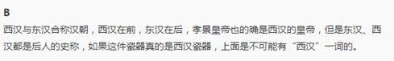
21. 小丽买了一双漂亮的鞋子，她的同学都没有见过这双鞋了，于是大家就猜，小红说：“你买的鞋不会是红色的。”小彩说：“你买的鞋子不是黄的就是黑的。”小玲说：“你买的鞋子一定是黑色的。”这三个人的看法至少有一种是正确的，至少有一种是错误的。请问，小丽的鞋子到底是什么颜色的？。
答：假设小丽的鞋子是黑色的，那么三种看法都是正确的，不符合题意；假设是黄色的，前两种看法是正确的，第三种看法是错误的；假设是红色的，那么三句话都是错误的。因此，小丽的裙子是黄色的。
22. 这是一幅现场图：乍看好像是死者把手枪固定在桌上，然后拉动绑在扳机上的绳子中弹而亡。但刑警看完现场后说：“这不是自杀，而是他杀。”
请问，杀人凶手布置的自杀现场有什么漏洞呢？
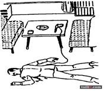
答：绳子应该绑在于弹射出相反的方向
23. 你是一个小偷。
晚上八点，你登上一辆没有多少人乘坐的公交车。你面前座位上坐着一名彪形大汉，他正把头倚在车窗上眯着眼休息，他上衣兜里的手机在你眼前熠熠生辉。
你的目标是偷取这位壮汉的手机。
不过，他的手机连着耳机线，此时壮汉正在听单曲循环播放的鲍勃·迪伦的歌.壮汉虽然眼睛是闭的，但并没有睡着，歌曲如果播放中断壮汉马上就会发觉，即使歌曲播放完，10秒钟内听不到歌曲壮汉也会察觉，如果不假思索的直接拔掉耳机，不但任务会失败，你还得肿着脸满地找牙。
请问，你究竟该怎么做才能顺利取得手机，完成任务？
以下是你通过观察得到的情况：
（1） 天色很暗
（2） 你完全可以毫不费力的偷出壮汉的手机，甚至可以查看手机内容，但不能停止或切换音乐的播放，壮汉的耳朵很灵敏。
（3） 虽然他耳朵灵敏，但耳机中音乐声很大，壮汉除了音乐外，听不到车内的任何响动，而且他是闭着眼的，看不到你的任何动作。
（4） 公交车每5分钟停一次站，停靠4秒，公交车全程60分钟，你的偷窃必须在此时间段内进行。
（5） 你可以利用一些常规工具，但不能使用超现实的工具，也不能用刀或枪威胁。记住你是偷窃，不是打劫。
答：利用胶带。先把壮汉的手机掏出来贴上两层胶带，再把自己座位边的窗户打开，然后直接用胶带把手机粘到车窗外壁上，这样就形成了人在车内手机在车外的情况了。等公交车进站的时候，果断下车，迅速跑到贴手机的车窗外，等车子一启动，拔掉耳机摘下手机，飞奔。等壮汉反应过来，我早就跑远了，而且他也不会第一时间意识到手机是车外的人偷走的，更何况天黑，他怎么也无力回天了。
24. 接到绑匪的电话，按警方的指示，爸爸要求绑匪拍一张7岁双胞胎拿着当天报纸的照片给他。绑匪拒绝了，不过寄来了一段录音：“爸爸妈妈，今天是2012年2月5日，我们现在很安全，叔叔对我们很好，还对我们笑，和姐姐玩扑克，和我下棋。希望爸爸妈妈尽早让我们回去。”
如果你是警察，应该告诉父母：
A、“赶紧给绑匪钱，否则绑匪会撕票的。”
B、“不要给绑匪钱，就算给了钱绑匪也会撕票的。”
答：绑匪了解双胞胎的习惯，说明是熟人作案。女) L已经见过绑匪的脸，绑匪得手后一定会将人质杀害。他为什么要说具体时间呢? 很有可能已经撕票了，因为不拍照给录音，这是之前逼着录的，录音中“对我们笑”透露出歹徒似乎不是蒙面的，知道个自的喜好说明绑匪跟他们很熟，既然如此就更会撕票了。
25. 有一位著名的心理 学家兼精神病医生，他能够运用精神分析学说破案。一天，维也纳警察局的警长布利尔请他去聊天，正巧遇到一起案件。情况是这样的：5天前，郊外一户人家的漂亮女人被杀，现场没有凶手遗失的东西，只是在大门口捡到一支才吸了一两口的香烟。现在，有两个人值得怀疑：一个是被害者的情人，音乐学校的学生。死者生前常常将此人带回家中。最近，被害人与他经常发生争吵。另一嫌疑人是那一地区的缝纫机推销员。此人曾花言巧语引诱死者，但遭拒绝。这两人都有杀人嫌疑，但都缺少有力证据。布利尔警长正准备做唇纹对比。这位心理 学家说:"即使不用这样，也可以判明谁是杀人犯！“那么，凶犯是谁呢？
A、被害者的情人B、缝纫机推销员
答：推销员。进门前把烟灭了是推销员的职业习惯。
26. 饭店的餐桌上有四个杯子，每个杯子上写着一句话。
第1个杯子：每个杯子里都有水果糖。
第2个杯子：我的里面有苹果。
第3个杯子：我的里面没有巧克力。
第4个杯子：有的杯子里没有水果糖。
以上所述，如果有一句话是真的，那么以下哪种说法为真？
A．每个杯子中都有水果糖。
B．每个杯子中都没有水果糖。
C．每个杯子里都没有苹果。
D．第3个杯子里有巧克力。
答：D
由题目得，第一和第四个杯子一定有句真话，因为这两句话是矛盾的。
假设第一个杯子是真话，第二个杯子就是假话，第三个杯子是真话，有2句真话矛盾。
所以第四个杯子说的是真话，其他三个杯子都是假话。A排除。
B也排除，因为有些杯子没有糖，有些杯子是有的，例如，第一个杯子有糖，第二个有糖，第三个有巧克力，第四个有苹果。由此可以看出，C也不对。
只有D是真的，如果第三个杯子没有巧克力，那么就有2句话是真的了。
27. 在一次地理考试结束后，有五个同学看了看彼此五个选择题的答案，其中：
同学甲：第三题是A，第二题是C。
同学乙：第四题是D，第二题是E。
同学丙：第一题是D，第五题是B。
同学丁：第四题是B，第三题是E。
同学戊：第二题是A，第五题是C。
结果他们各答对了一个答案。根据这个条件猜猜哪个选项正确？
A．第一题是D，第二题是A；
B．第二题是E，第三题是B；
C．第三题是A，第四题是B；
答：C 假设同学甲"第三题是A"的说法正确，那么第二题的答案就不是C。同时，第二题的答案也不是A，第五题的答案是C，再根据同学丙的答案知道第一题答案是D，然后根据同学乙的答案知道第二题的答案是E，最后根据同学丁的答案知道第四题的答案是B。所以以上四个选项第三个选项正确。
28. 我和小刚、小明是好朋友。小刚是一个医学博士，我和小明则是整天游手好闲的小混混。
一天我和小刚、小明约好了在某地见面吃饭。但我和小刚都到了之后发现小明迟迟没有来，打电话也不通，于是决定去小明家看看。
此时已是晚上，我们走到小明的家门口敲门却没有人回应，只好强行将门撞开。
家里一片漆黑，我们打开灯，小刚要我去2楼，自己去1楼的厕所找小明。
我看着小刚进了厕所，厕所也是黑漆漆的，然后自己也走上楼梯去2楼。
15秒左右，我走到了2楼，便听见了小刚的叫声。
我也马上赶到了厕所，发现小明的尸体正躺在浴缸里，在灯光的照耀下能清晰地看到浴缸里被鲜血染红的水。
我们马上报了警，警察调查后，说死者是一刀割断左手动脉失血过多死亡，并且在小明衣服口袋了找到了这栋房间的钥匙。而我们进房子的时候，这栋房子的门是被反锁的，又经过警方调查，这栋房子的门窗都是从里面锁上的，也就是说这间房子是一间密室。
请根据现有线索，客观的判断出小明死于谁手。
A、文中的“我”
B、小刚
C、小明自杀
D、其他人物
答：小刚是凶手。
线索1: 死者小\明是被一刀精准地割破动脉而身亡，有此能力者便是身为医学博士的小\刚。
线索2 :我看着小刚进了厕所，他却在我走到2楼的时候才发现尸体尖叫，其中有很大一部分时
间可以让小刚将杀死小明后拿到的钥匙放回小明的口袋里，以及其它的一些动作。
线索3: 小\刚一开始就去厕所找小\明，正常人在去别人家找人一定是先去他的房间，他却直接
去厕所，并且发现了尸体，说明他一开始就知道尸体在哪并想要趁第一时间到达那
里，成为
第一个并且是一个人发现尸体的人。
29. 当酒吧的服务员送走客人时，发现沙发上有一人死亡，他是律师张某。经过现场侦查知道，他是喝了被人偷偷放在酒里的毒药毒死的。和他一起喝酒的其他三个人是王某、李某、赵某，他们分别坐在一张三人沙发和两张单人沙发上(如图A、B、C、D分别为王、李、赵、张的位置)。案发前，上述四人都没有离开过自己的座位，也没有其他人进入客厅，只有某服务员曾进来给张某和赵某分别倒过酒，但该服务员肯定不是凶手。你能根据上述线索判断出凶手是谁吗?
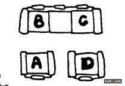
答：服务员曾给张某赵某倒过酒，因此最靠近张菜的赵某向他下了毒药。各人所座的座位分别B李某，A王某，C赵某，D张某。
30. 一个在运动中骨折的患者康复出院了，家里庆祝的时候，患者的哥哥说今天的可乐味道有点怪，患者的父亲和母亲喝了后纷纷表示可乐味道不对，但患者喝后坚称味道正常。患者在当天晚上洗澡时身亡，为什么？
答：他在医院接受治疗时因为错用药物而丧失了部分嗅觉和味觉，所以没能尝出可乐中的异常味道，洗澡时也没有闻到热水器中煤气泄漏的气味。
Signal推理社
2017年11月